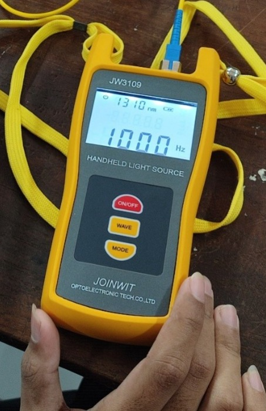
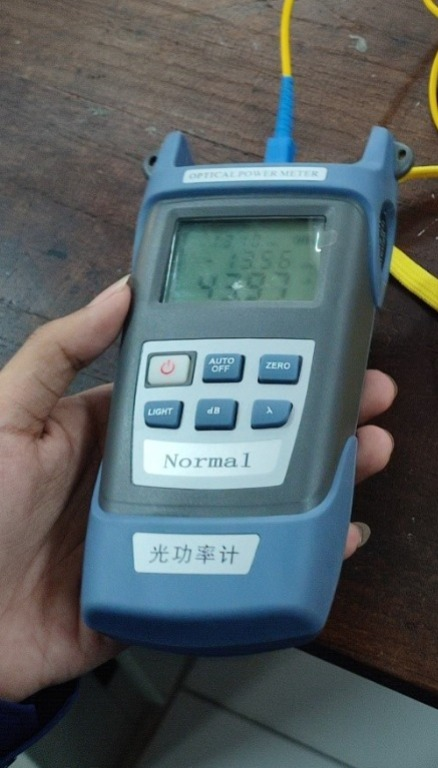
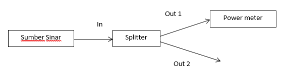
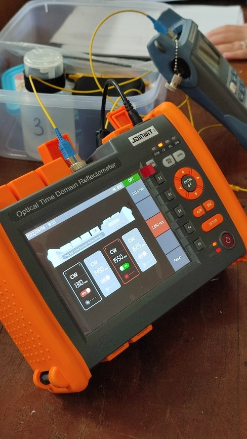

Pada hari Selasa, 6 September 2022, para mahasiswa melakukan praktikum tentang “Pengukuran Daya Sinar Pada Fiber Optik.”
Tentang LAB. TELEKOMUNIKASI : Kegiatan di laboratorium ini mencakup praktika Teknik Telekomunikasi dan Frekuensi Tinggi dengan pengenalan peralatan-peralatan telekomunikasi dasar dan lanjut, dan digital, serta peralatan frekuensi tinggi. Laboratorium ini juga dapat mendukung kegiatan penelitian dan pengembangan dalam bidang komunikasi.
1. Memahami cara pengukuran daya sinar pada Fiber Optik
2. Mengetahui tingkat redaman(penurunan) daya optik
3. Mengetahui bentuk dan sistem splitter(pembagi) optik
4. Mengetahui peralatan serta instrumen untuk pengukuran daya sinar
Sumber Sinar OLS :
OLS merupakan alat pengirim sinar. Alat ini digunakan untuk mengukur kekuatan sebuah optik sinyal untuk menguji daya rata-rata di serat optik sistem. OLS memiliki stabilitas yang tinggi dari daya output dan memiliki hasil panjang gelombang yang stabil.
Power Meter OPM :
Power meter merupakan alat untuk mengukur besaran-besaran listrik secara terintegrasi dari beberapa komponen alat ukur menjadi satu kesatuan yang terangkai dalam suatu alat ukur.
Pengukuran daya FO pada splitter fiber optik dibagi menjadi 4 yaitu: splitter 1/2, 1/4, 1/8, 1/16.
Berikut merupakan mekanisme singkat pengukuran daya sinar pada fiber optik :
Optical Time Domain Reflectometer (OTDR) :
OTDR adalah alat untuk membaca/mengukur karakteristik kabel optik.
